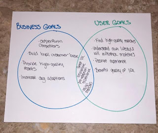
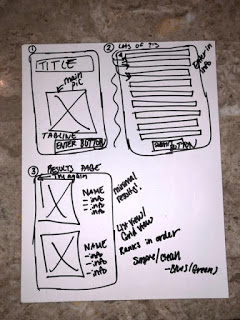
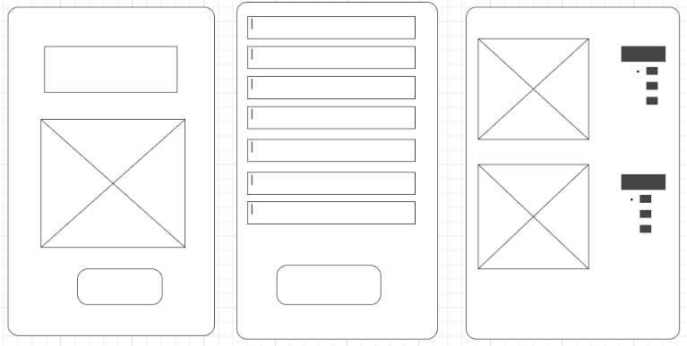

I am passionate about the bond between a dog and its human. That type of unique, unconditional love is something everyone should experience.
Pupple is a simple, easy to use app to match potential pets with the right person.
Pupple will ask the user about their lifestyle, activity level, home/living situation, interests, etc. to match them with the best canine companion.
The results will be fewer BUT more compatible.
2. INTRODUCTION:
The following app was developed for the final capstone project for my web development bootcamp.
There are many dog adoption match sites. This app was intended to produce less but more
accurate matches for the user. The design decisions and assumptions are solely based on
publicy available information.
3. PROGRAM USED:
Adobe XD
4. RESEARCH / EMPATHIZE WITH OTHERS:
I had family, friends, and classmates look at three different dog adoption match sites. I asked
them to verbalize their thoughts while browsing the sites. I also told them to inform me of any
opinions from past personal usage of these or similar sites.
It quickly became apparent that each participant thought these types of sites were oversaturated
with never-ending lists of options.
5. USER STORIES / PERSONAS:
I created three different user stories to highlight different possible scenarios for who might
be looking to adopt a dog. At first, they were made-up people that had fabricated backgrounds,
jobs, etc. The day before presenting for the final capstone project at Galvanize, I decided to
make these stories a little more fun and familiar by using well-loved movie characters.
6. REEVALUATE / DISTILL YOUR FINDINGS:
It's important to take a step back to reassess and reexamine what it is you're trying to achieve,
and what you're trying to accomplish as the end goal for the user.

7. SKETCH / ORGANIZE:
I drew out the user flow to better see what the user should see.

8. LO-FI WIREFRAME:
Combining the diagram and sketches, I developed wireframes to see clear structure and layout.

9. TAKEAWAYS:
It's hard to pretend you're looking to adopt a dog and make a large commitment when you are not.
You can only try so hard to design features for others when your own experiences are always with
you. Personally, I have used these sites and apps, but you can never 100% know the true experience
until you're actually looking for your new, furry friend.
10. FUTURE:
I would like to make Pupple a one-stop shop where users can go to fulfill every pet-parent need.
--------------------------------------------------------------------------------------------------------